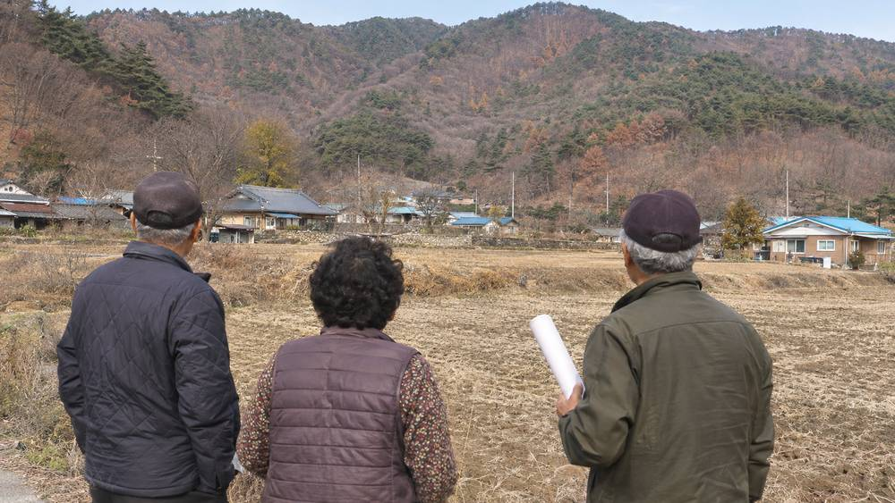

시민에너지
강원 19개 마을 햇빛소득마을 3차 공모 신청…행안부 12월 말 최종 선정

강원은 1·2차 공모에서 46개 마을이 선정…3차 접수는 10월 30일 마감
강원도 9개 시·군의 19개 마을이 행정안전부의 「2026년 햇빛소득마을 3차 공모」에 신청서를 냈다. 접수는 9월 17일에 시작해 10월 30일에 마감했다. 햇빛소득마을은 주민이 협동조합을 꾸려 태양광 같은 발전시설을 직접 짓고, 전기를 팔아 얻은 수익을 마을 주민이 함께 나누는 사업이다.
3차 공모는 앞선 공모 기간에 신청하지 못한 마을과 '차기 신청 권고'를 받은 마을에 다시 기회를 주려고 열렸다. 행안부가 9월 16일 낸 보도자료에 따르면 전국에서 1차 공모에 129개 마을이, 2차 공모에 608개 마을이 신청했다. 행안부는 햇빛소득마을 700개를 발굴하는 것을 목표로 두고 관계 부처·지방정부와 협력해 더 많은 마을이 참여하도록 지원하겠다고 밝혔다.
강원에서는 1·2차 공모에서 이미 46개 마을이 선정됐고, 강원도는 3차 최종 선정 규모가 정해지는 대로 행정 지원을 집중할 방침이다. 행안부는 3차 공모의 최종 선정 결과를 12월 말에 발표할 예정이다.
출처: 강원도민일보 2026-11-12 김정호 원문 보기
출처: 행정안전부 2026-09-16 보도자료 '햇빛소득마을, 3차 공모로 전국 확산 이어간다'(행정안전부 햇빛소득마을추진단 기반조성과, KDI 경제교육·정보센터 게재본) 원문 보기
시민이 만들고 지역이 소유하는 에너지 전환제4섹터 방식 시민주도 지역에너지 공공개발